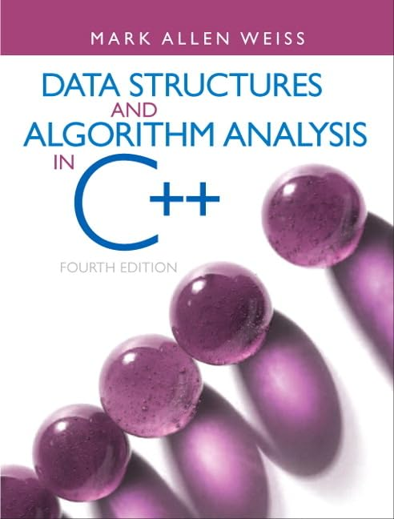
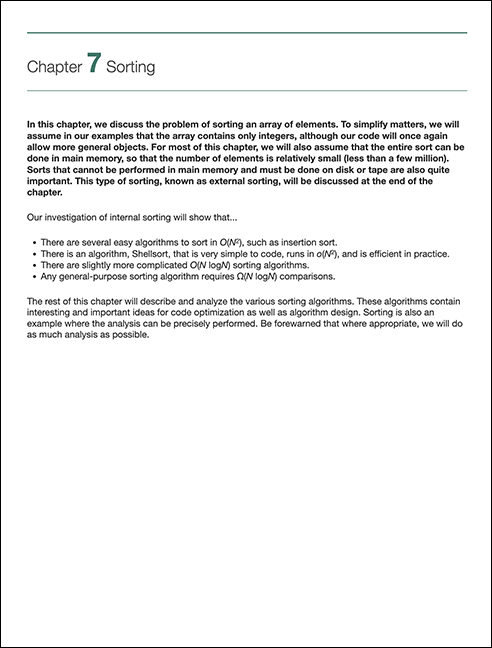

CS2C: Advanced Data Structures & Algorithms in C++
Suggested Reading
Module 8 — Sorting
This Week’s Reading
This week is a great time to read
Chapter 7
on sorting.

Data Structures and Algorithm Analysis in C++
, 4th Edition — Mark Allen Weiss

Chapter 7 — Sorting